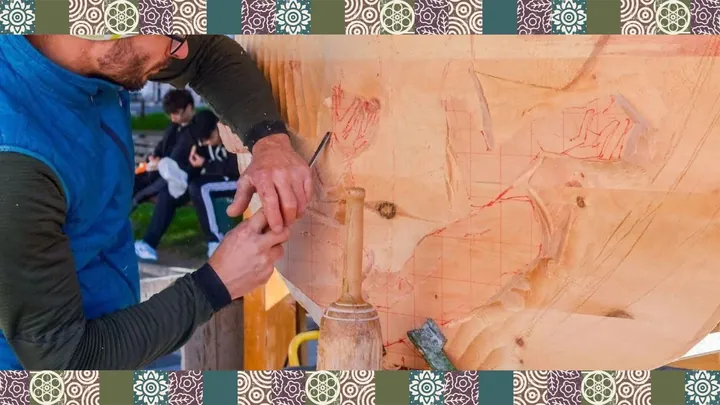

da mar 3 nov a dom 8 nov
Ex Tempore di Scultura su Legno
L’ Ex Tempore di Scultura su Legno è un concorso, organizzato dal Consorzio Belluno Centro Storico , che rappresenta da anni l’appuntamento più atteso dell’autunno bellunese, nel periodo che anticipa la tanto amata festa del Patrono San Martino (11 novembre).
 Indicazioni
Indicazioni
- Costi e prenotazioni
- Costo non indicato · Prenotazione non indicata
- Programma
- Programma da verificare. Apri la fonte ufficiale per orari e possibili aggiornamenti.
- In caso di maltempo
- Nessuna indicazione specifica pubblicata.
- Note
- Acquisito automaticamente dalla fonte.
L’EVENTO
Descrizione completa
L’ Ex Tempore di Scultura su Legno è un concorso, organizzato dal Consorzio Belluno Centro Storico , che rappresenta da anni l’appuntamento più atteso dell’autunno bellunese, nel periodo che anticipa la tanto amata festa del Patrono San Martino (11 novembre).
Da martedì 3 a domenica 8 novembre nel cuore del centro storico di Belluno, le vie e le piazze si trasformano in un grande laboratorio a cielo aperto durante il Simposio di Scultura , uno degli appuntamenti più attesi dell’ Ex Tempore . Per alcuni giorni, il suono ritmico delle motoseghe e degli scalpelli risuona tra le antiche mura, mentre gli artisti, disposti in diverse postazioni, danno vita a opere uniche scolpendo il legno con maestria e passione.
L’aria si riempie dell’inconfondibile profumo di cirmolo , resinoso e intenso, che si mescola alle voci dei curiosi e al mormorio della città. Passeggiando tra le postazioni, si possono osservare le sculture prendere forma sotto gli occhi del pubblico: figure ispirate alla natura, volti, simboli e storie che nascono dal legno e si fanno arte.
Il tema di quest'anno è " Scolpire il fantastico: Buzzati e il suo mondo ", un omaggio a Dino Buzzati in occasione dei 120 anni dalla nascita e un importante tema per festeggiare i 40 anni dell'Ex Tempore.
IL PROGRAMMA
Programma e orari
Appuntamenti raccolti dalle fonti elencate. Dove manca un orario, non è ancora disponibile in questa scheda.
Programma pubblicato
- 2026-11-03 — 2026-11-08 ·
INFORMAZIONI UTILI
Prima di partire
- Controllare la fonte prima di partire.
ORGANIZZAZIONE